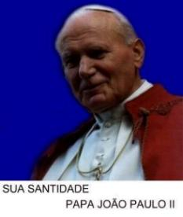
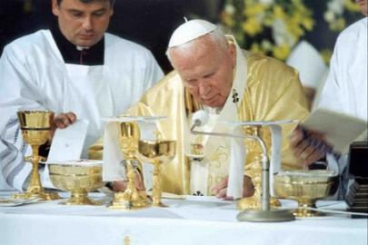
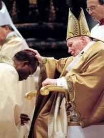

"PAPA JOÃO PAULO II"
=SERVO DA FÉ E DA PAZ=



"Sua Vida e Sua Obra"
=ÍNDICE=
 NASCIMENTO, JUVENTUDE, SACERDÓCIO
NASCIMENTO, JUVENTUDE, SACERDÓCIO
 AQUELES DOIS TIROS - QUEM ARMOU AQUELA MÃO ASSASSINA?
AQUELES DOIS TIROS - QUEM ARMOU AQUELA MÃO ASSASSINA?
 NOTICIAS, ORAÇÃO,
"BEATIFICAÇÃO", "CANONIZAÇÃO", E-MAIL E FIRMA DE BUSCA
NOTICIAS, ORAÇÃO,
"BEATIFICAÇÃO", "CANONIZAÇÃO", E-MAIL E FIRMA DE BUSCA